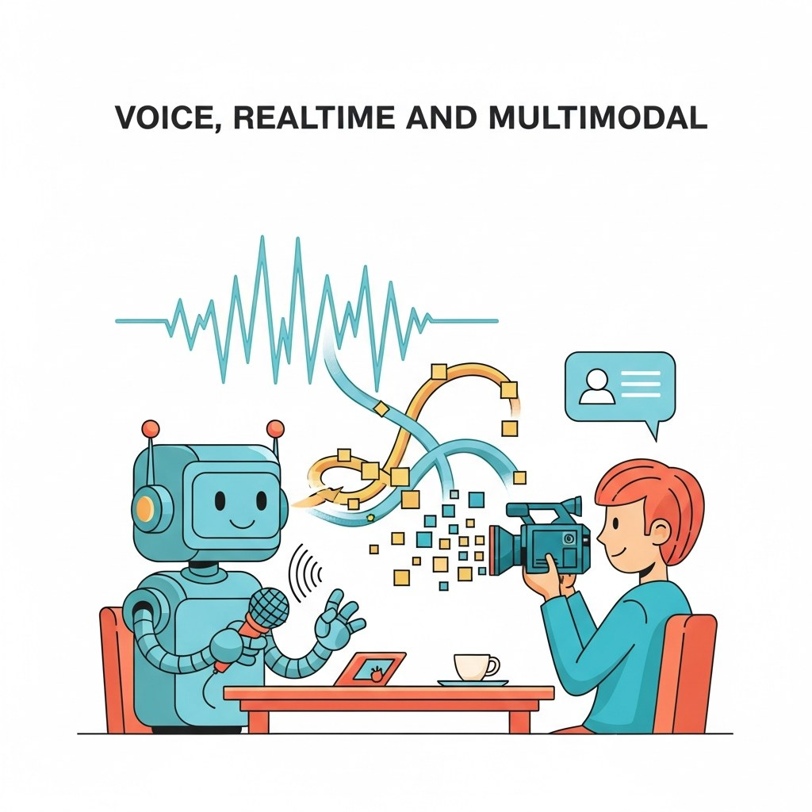

"Latency is a feature, not a bug, when you can hear the silence."
Echo, Realtime-Wrangling AI Agent
Chapter 37 built text chat. This chapter adds the voice and the realtime modality: streaming ASR, TTS, speech-to-speech models, the Realtime API surface, and the latency budgets that make voice agents feel responsive.
Text chat is one mode; conversational AI also lives in voice, video, and screen-sharing assistants. This chapter covers voice agents (ASR, TTS, turn-taking), streaming audio architectures, the realtime API surface from major vendors (Gemini Live, GPT-4o Realtime, Anthropic), audio token budgets, and the open-source realtime stack (Moshi, Pipecat, LiveKit). It merges material from the Conv AI Voice section and the Streaming/Realtime Multimodal chapter into one focused home.
Chapter Overview
The human ear notices a conversational pause above roughly 800 milliseconds; below 200 ms, you sound like a person. Hitting that target with an LLM in the loop was impossible in 2023, achievable in late 2024 (GPT-4o Realtime and Gemini Live shipped sub-second time-to-first-audio-token), and standard product hygiene by 2026. This chapter teaches the streaming-audio architectures, the GPT-4o Realtime and Gemini Live event protocols, the audio-token budget and latency engineering needed to stay under that perceptual threshold, the open-source realtime stack (Moshi, Pipecat, LiveKit Agents), and when cascaded STT-plus-LLM-plus-TTS still beats native speech-to-speech.
Realtime voice is the modality where 2024 to 2026 changed the product surface most. By the end of this chapter you will know how to architect a sub-second voice agent, when to use native speech-to-speech vs a cascaded pipeline, and what the production failure modes actually look like.
- Explain the streaming-audio event protocol used by GPT-4o Realtime and Gemini Live.
- Budget audio tokens and latency to hit a time-to-first-audio-token target.
- Architect a voice agent with Pipecat, LiveKit Agents, or Moshi for an open-source stack.
- Compare cascaded STT+LLM+TTS pipelines with native speech-to-speech models.
- Integrate vision into a realtime voice conversation as a multimodal assistant.
- Diagnose latency, interruption, and barge-in failures in a production voice system.
Sections in This Chapter
Prerequisites
- Conversational AI fundamentals from Chapter 37
- Audio fundamentals from Chapter 20
- Comfort with streaming APIs and async Python
- 40.1 Voice Agents and Speech Interfaces Voice agents combine the naturalness of speech with the power of agentic tool use. Entry
- 40.2 Streaming Audio Architectures A streaming audio conversation with a model is an unforgiving real-time system. Entry
- 40.3 Gemini Live and GPT-4o Realtime API Both GPT-4o Realtime and Gemini Live expose a WebSocket-based, event-driven protocol for streaming audio and tool calls. Intermediate
- 40.4 Audio Token Budget and Latency Engineering Latency in a streaming audio system is determined by the token rate of the audio codec, the time-to-first-audio-token (TTFAT) of the model, and the cumulative network and buffer overhead. Intermediate
- 40.5 Open-Source Realtime: Moshi, Pipecat, LiveKit Agents The open-source realtime stack in 2026 has three layers. Advanced
- 40.6a Voice AI: STT, TTS, and Real-Time Pipelines Speech-to-text and text-to-speech models, real-time voice pipelines, and voice-specific orchestration challenges. Intermediate
- 40.6b Vision, Speech-to-Speech, and Voice AI Frameworks Vision input in voice conversations, native speech-to-speech models, and a comparison of voice AI orchestration frameworks. Intermediate
Objective
Wire up a voice assistant you can have a natural-sounding conversation with using the OpenAI Realtime API (or Gemini Live). By the end you will hit sub-1-second response latency, handle barge-in, and have a working phone-bot prototype.
Steps
- Step 1: Hello world. Use the official
openaiPython SDK Realtime sample. Speak into your mic, hear a reply. Verify roundtrip latency < 1.5s usingtime.perf_counter()around the audio frames. - Step 2: Add a system prompt + persona. Pick a persona ("a curt British butler"). Confirm voice and behavior shift accordingly.
- Step 3: Tool call. Register one function tool:
get_weather(city)backed by a free API. When you ask "what's the weather in Tokyo?" the agent should call the function and answer. - Step 4: Barge-in. Configure server VAD with
turn_detection.type="server_vad". Interrupt the model mid-reply; confirm it stops speaking within 500ms and listens. - Step 5: Latency budget. Add fine-grained logs: time-to-first-audio, full-response time. Identify the slowest hop. Aim for < 800ms time-to-first-audio.
- Step 6: Library shortcut. Re-implement using
livekit-agentsorpipecat(~40 lines). Compare: the framework handles WebRTC, audio buffering, interruption logic for you. This is the production stack.
Expected Output
Expected time: 3 to 4 hours. Difficulty: intermediate. Artifact: a runnable voice agent with measured latency budget.
What's Next?
Next: Chapter 41: Conversational AI Tools of the Trade. Chapter 41 closes Part VIII with the consolidated conversational toolbox: dialogue frameworks (Rasa, Dialogflow CX, Voiceflow), memory stores (Letta, Zep, mem0), voice-pipeline stacks, eval rigs (Inspect AI's dialogue suite, AgentSims), and the realtime infrastructure for production deployments. After that, Part IX asks the question every conversational system eventually faces: how do you know it is actually working?